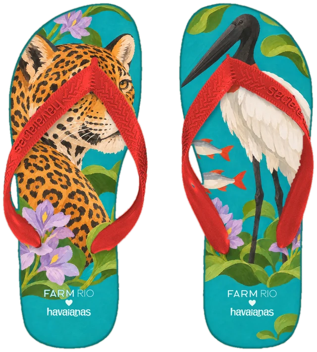
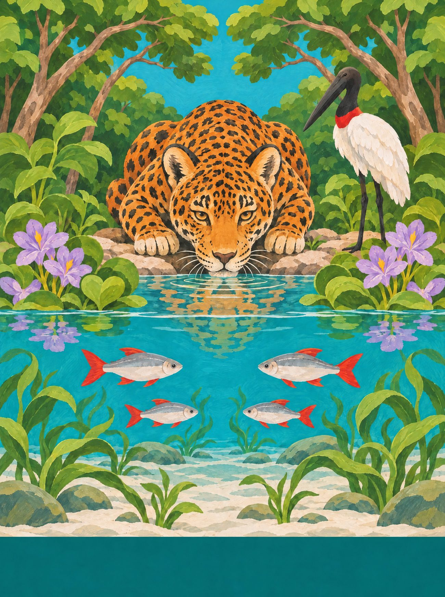
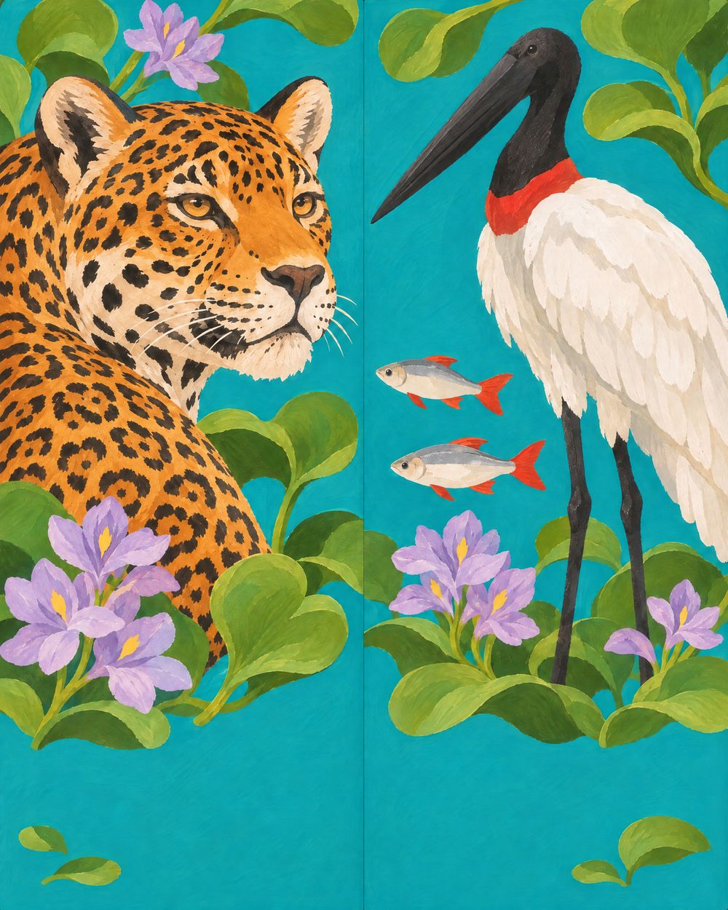
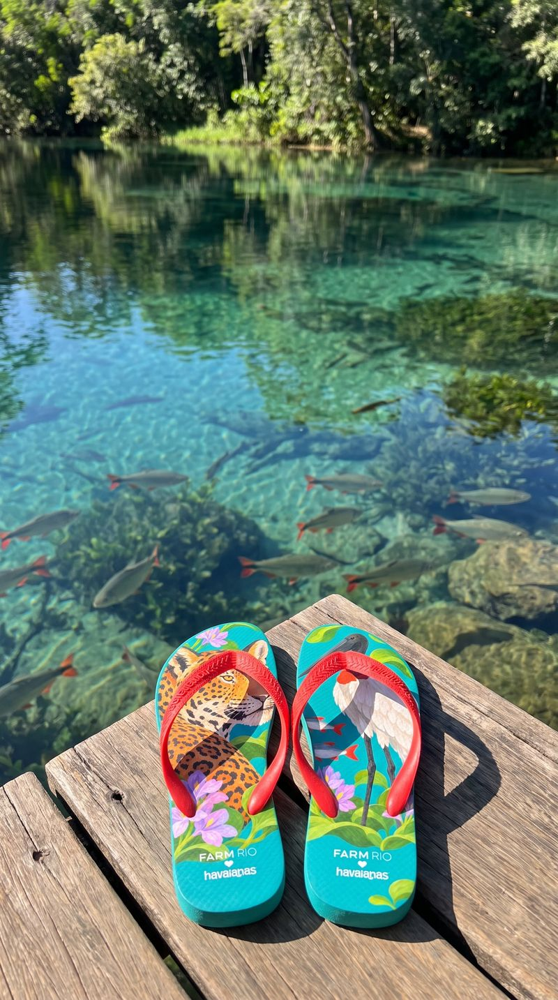
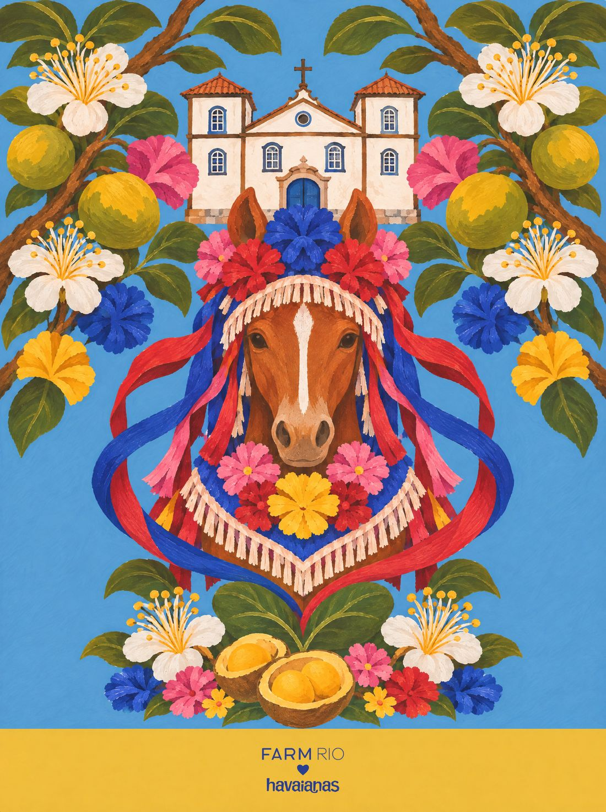

Mato Grosso do Sul
Onça de Bonito
A onça-pintada e o tuiuiú do Pantanal sul, sobre a água transparente dos rios de Bonito.
10 / 14 · Centro-Oeste

o coração
Encontre o coração
Ele não está desenhado em cima de nada. Aparece quando os próprios elementos da cena se encontram. Procure na ilustração e toque nele.
♥ uma folha de aguapé na beira do rio de Bonito


o par
Dois pés, uma história
na palmilha
pé esquerdo com a onça (cabeça e ombros) entre aguapés; pé direito com o tuiuiú, aguapés e duas piraputangas.
borracha e tira
turquesa dos rios de Bonito; tira vermelho-tuiuiú.
a arte da palmilha
Em díptico

caderno de campo
No Pantanal sul, a água manda: na cheia o campo vira lagoa, na seca o tuiuiú desfila de pescoço vermelho entre os jacarés. A arara-azul passa gritando em pares e a piúva pinta o fim do inverno de rosa. O peão pantaneiro toca a comitiva com o berrante. Em Bonito, o rio é tão transparente que dá para contar os peixes. E em Campo Grande, a Feira Central serve sobá, herança dos imigrantes de Okinawa, enquanto a roda de tereré gelado passa de mão em mão, herança da fronteira com o Paraguai.
trilha · Chalana (Mário Zan e Arlindo Pinto) · a viola de Almir Sater · o berrante da comitiva
A âncora: a água cristalina de Bonito com as piraputangas: o Pantanal é dividido com o MT, Bonito é só daqui.
pesquisa de campo
Na rua, antes do desenho


campanha
O par no lugar

fotos de campo deste estado

← Tocantins